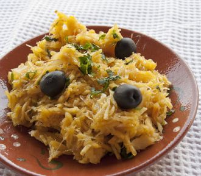

Receita de Bacalhau a Brás

Um pouco da história...
Bacalhau a Brás é tipico prato portugues de bacalhau.
Sendo um dos pratos, mais populares confecionados com este peixe, consite em bacalhau desfiado, batata palha
frita, cebola frita as rodelas finas, ovo mexido, azeitonas e salsa picada
É muito consumido em portugal e também em macau. O excelente sabor depende da relação dos componentes da receita,
principalmente a quantidade de cebola em relação ao bacalhau e o azeite usado para efetuar este prato
A receita foi criada por um taberneiro do Bairro Alto, em Lisboa, de nome Brás (ou Braz, como era uso escrever nessa época)
fonte: wikipedia
Receita:
| Características da Receita |
| Dificuldade |
Custo |
Tempo |
Doses |
| Facíl |
Baixo |
40 minutos |
4 pessoas |
Ingredientes:
- 400g de batata palhas
- 6 ovos
- 500g de bacalhau desfiado
- 2 cebolas
- 3 dentes de alho
- Salsa q.b.
- 1 dl
- 0,5 dl de azeite
- Sal e pimenta q.b.
- Azeitonas
Modo de preparação
- Demolhe o bacalhaude um dia para o outro
- Descasque e lave as cebolas e corte-as em meia lua finas
- Descasque e lave os dentes de alhos, e pique-os
- Bata os ovos com o leite
- Num tacho aqueça o azeite, junte as cebolas e os dentes de alhos
- Deixe refogar ate que fiquem douradinhos
- Junte depois o bacalhau e deixe cozinhar mais um pouco até que fique com o aspecto de cozinhado
- Junte depois as batatas, envolva e regue com os ovos
- Deixe cozinhar, mexendo sempre
- Retire do lume e retifique os temperos
- Polvilhe com salsa picadda e as azeitonas
- Decore a gosto e sirva
Gostou da receita? Deixe o seu email para receber a nossa newsletter